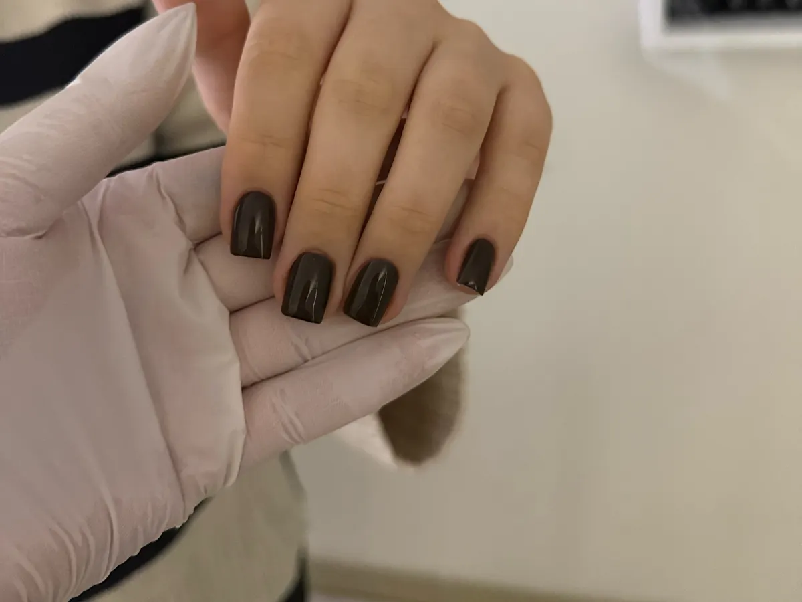
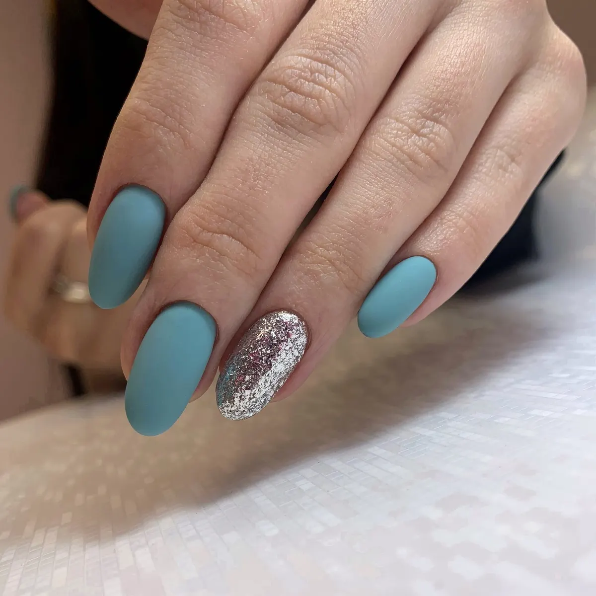
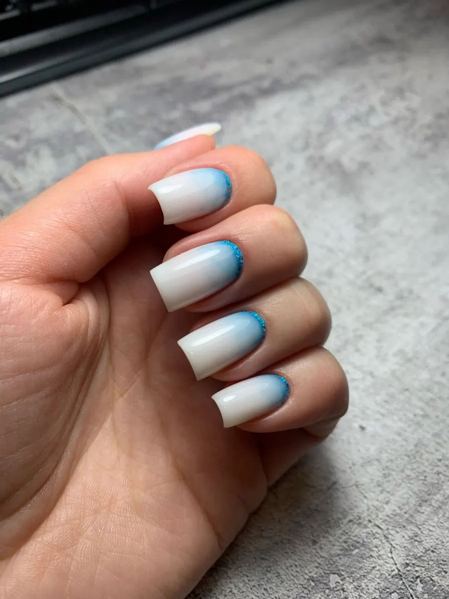
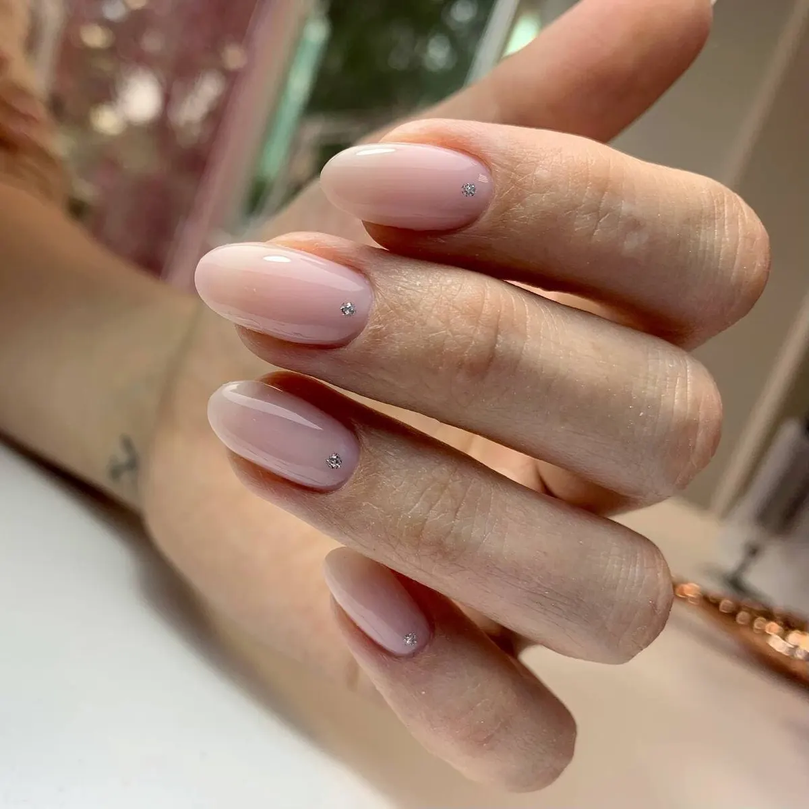
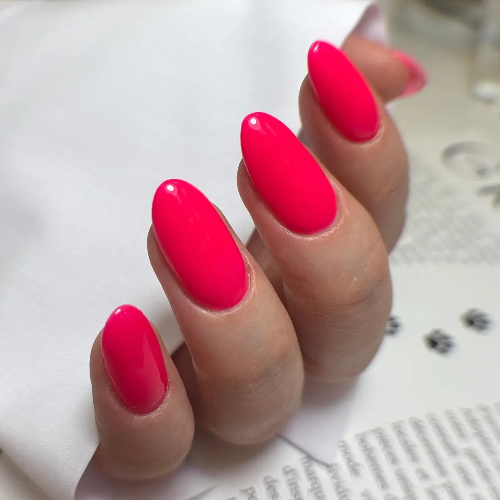
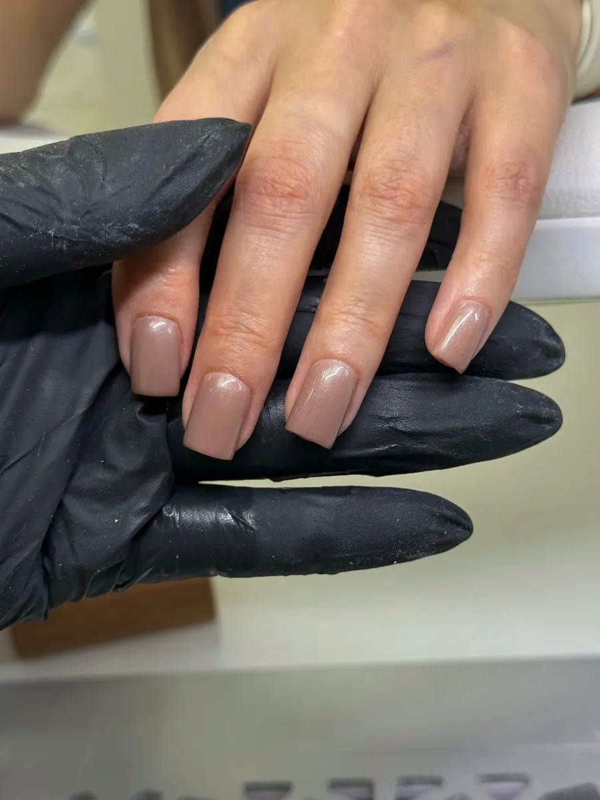
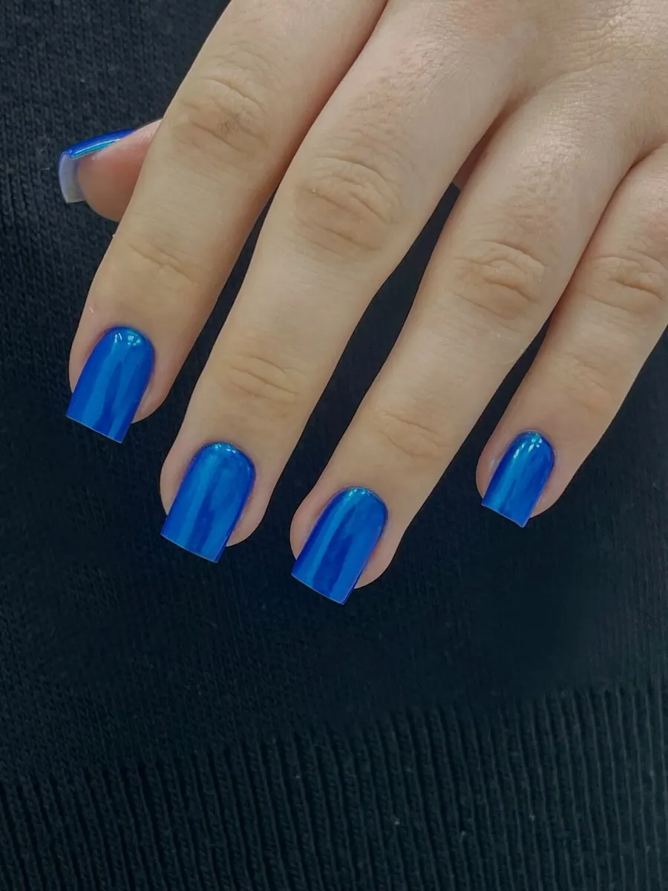

Маникюр · педикюр · подология · Мурманск
Маникюр и педикюр в Мурманске – с кабинетом подолога
Студия на Полярных Зорях, 21: чисто и стерильно, как в клинике. Цены на этой странице, запись онлайн.
- Полярные Зори, 21, корп. 2
- Ежедневно с 10:00 до 20:00
- Кабинет подолога

Цены
Цены из онлайн-записи студии на 14 октября.
Маникюр
- Комбинированный маникюрснятие входит1 500 ₽
- Маникюр с однотонным покрытиемснятие, укрепление, покрытиеот 2 300 ₽
- Маникюр + френчснятие, маникюр, покрытиеот 2 800 ₽
- Наращивание или коррекцияот 3 500 ₽
- Дизайнзависит от сложностиот 100 ₽
- Мужской маникюр1 500 ₽
Педикюр
- Педикюр комплексснятие, обработка стоп, гель-лак3 000 ₽
- Обработка стоп и пальцевбез покрытия2 500 ₽
- Обработка пальчиков + покрытиеот 2 500 ₽
- Педикюр + плёнкиснятие, обработка стоп и пальцев, плёнкиот 3 500 ₽
Подолог
- Консультация с осмотром600 ₽
- Парамедицинский педикюрот сухости до трещин и утолщённых ногтей – 1, 2 или 3 категория, до 3 500 ₽от 2 500 ₽
- Коррекция врастания ногтяс перевязкой; при воспалении – 2 000 ₽от 1 000 ₽
- Стержневая мозольс разгрузкойот 1 000 ₽
- Трещинысложность определяет специалистот 1 000 ₽
- Индивидуальные стельки4 500 ₽
Ремонт покрытия по гарантии – в течение 7 дней. Полный прайс подолога – в онлайн-записи.
Как проходит визит
- 01
Записываетесь онлайн
Услуга, мастер и свободное время – в онлайн-записи студии, звонить не нужно.
- 02
Чисто и стерильно
«Атмосфера клиники вызывает ещё больше доверия», – пишет гостья.
- 03
Мастер объясняет
Если ногти испорчены, расскажут, откуда трещина и как ухаживать дома.
- 04
Сложные стопы – к подологу
Вросший ноготь, мозоли, трещины. Начать можно с консультации с осмотром.
- 05
Цена известна заранее
Прайс на этой странице, ремонт покрытия по гарантии 7 дней.






Удобно прийти
Каждый день до 20:00
Можно после работы, в выходные тоже.
Полярные Зори, 21, корп. 2
Остановка «Улица Академика Книповича» – в 190 метрах.
Кабинет подолога
Парамедицинский педикюр, вросший ноготь, мозоли, стельки.
Гарантия 7 дней
Если с покрытием что-то случилось – ремонт по гарантии.
Отзывы с Яндекс.Карт
«Это не просто салон красоты, а скорее маленькая клиника с уклоном в подологию. Чисто, стерильно, девочки очень доброжелательные. … Отдельно порадовал приятный прайс! Для нашего города цены на маникюр и педикюр часто сильно завышены, а здесь реально адекватная стоимость за такое качество.»
Maru Agaponowa · 27 сентября 2026
«Пришла с ногтями, испорченными другим мастером, но специалист сотворил чудо — маникюр получился аккуратным и очень красивым. Понравилось, что мастер подошел к делу комплексно: не просто сделал форму, а объяснил, в чем причина появления трещины и других проблем, подробно подсказал, как ухаживать за ногтями.»
Екатерина А. · 7 августа 2026
«Хожу в салон не первый раз, всегда делают качественно, мастера не опаздывают, в салоне уютно»
Рената Шульга · 26 марта 2026
Отзывы с карточки на Яндекс.Картах, без правок.
Частые вопросы
С чем идти к подологу?
Вросший или утолщённый ноготь, стержневые мозоли, натоптыши, трещины на пятках. Начать можно с консультации с осмотром – 600 ₽.
Что входит в маникюр с покрытием?
Снятие старого покрытия, маникюр, укрепление и однотонное покрытие – от 2 300 ₽.
А если покрытие отклеилось?
В течение 7 дней – ремонт по гарантии.
Как записаться?
Онлайн, кнопкой на этой странице – там видно мастеров и свободное время. Или по телефону +7 (911) 320-11-50.
Запись каждый день с 10:00 до 20:00
- Адрес
- ул. Полярные Зори, 21, корп. 2, Мурманск
- Часы
- Ежедневно 10:00–20:00
- Телефон
- +7 (911) 320-11-50